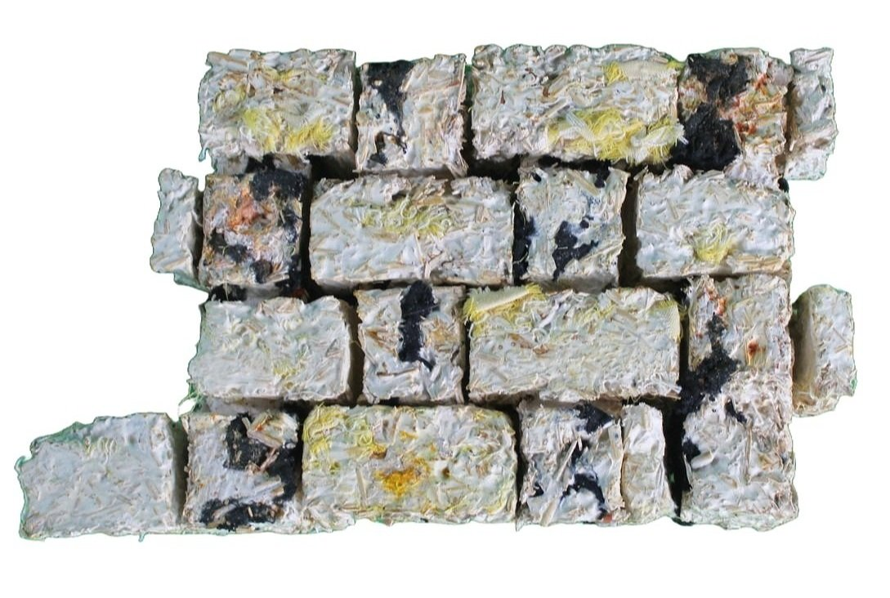
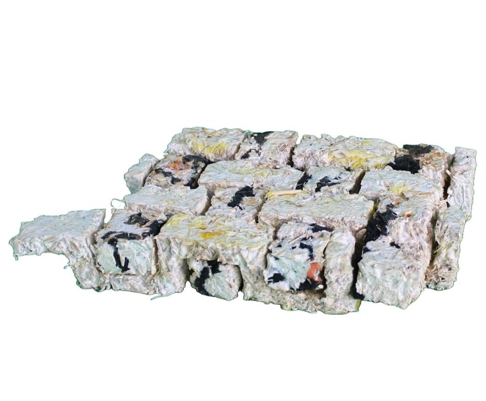

Mycelial Mat


Mycelium, the roots of mushrooms, provide essential nutrients that allow others around them to thrive. Most of Earth's soil contains mycelium networks supporting trees and plants while fostering biodiversity, yet these structures remain largely invisible to us.
This interactive mat exposes mycelium, enabling deeper connection with subterranean ecosystems. The design draws from weaving patterns and sashimono, a traditional Japanese woodworking method that joins pieces without nails.
A zine accompanies this work, documenting the creative process.